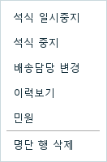
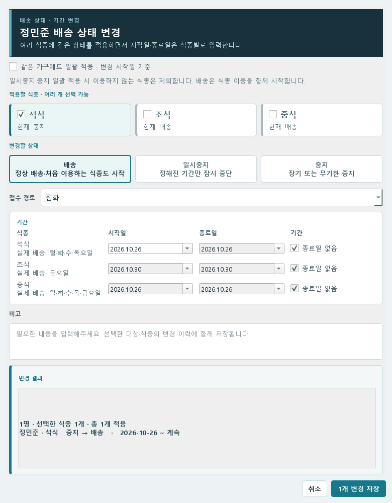
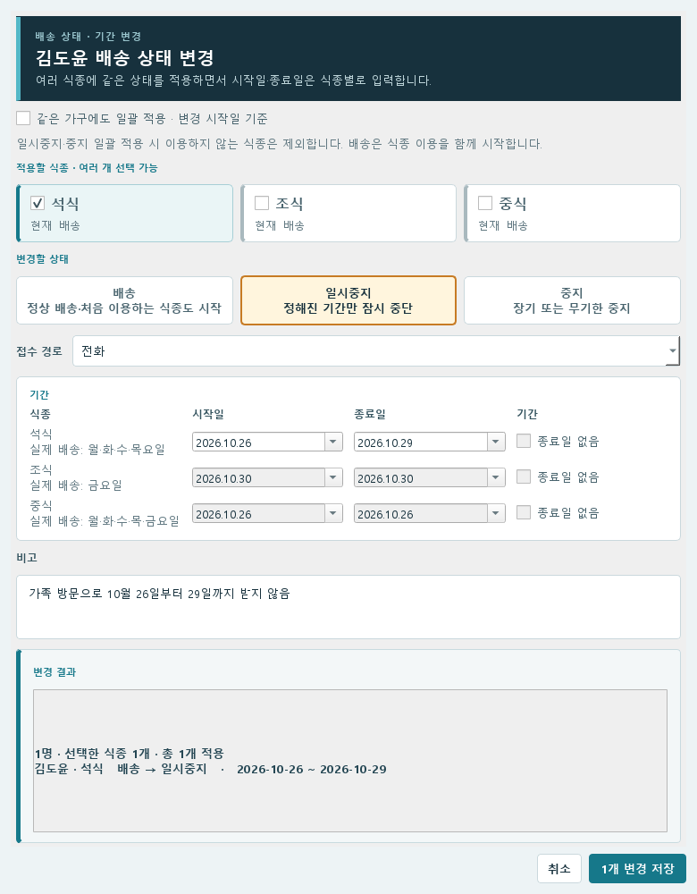
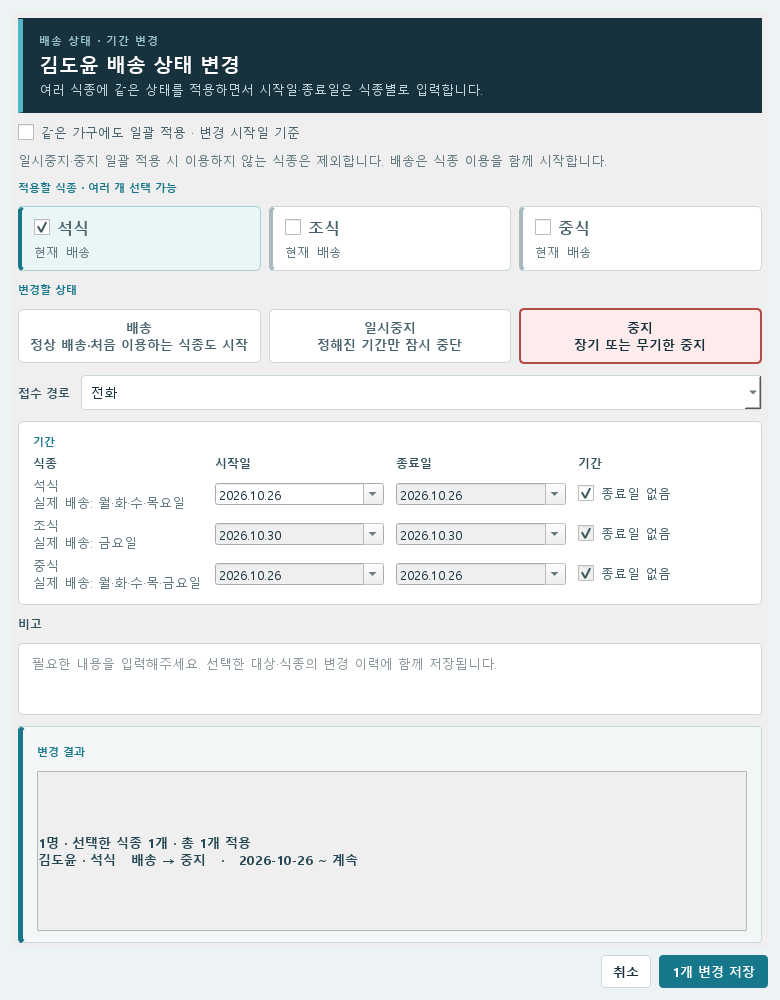
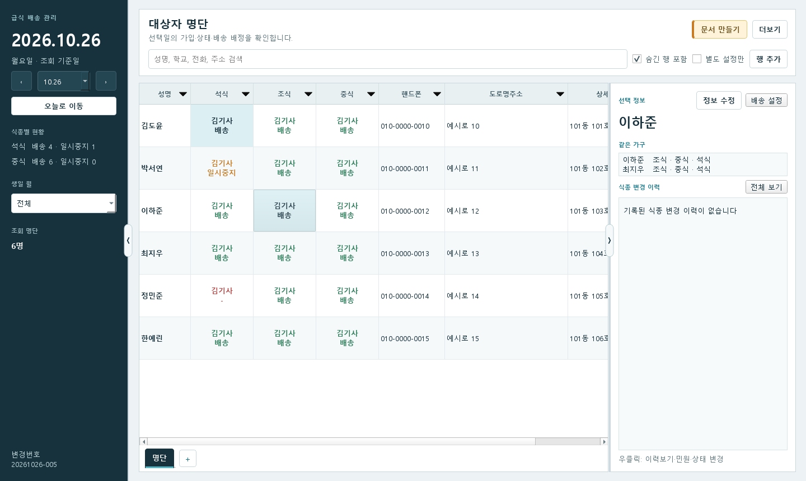
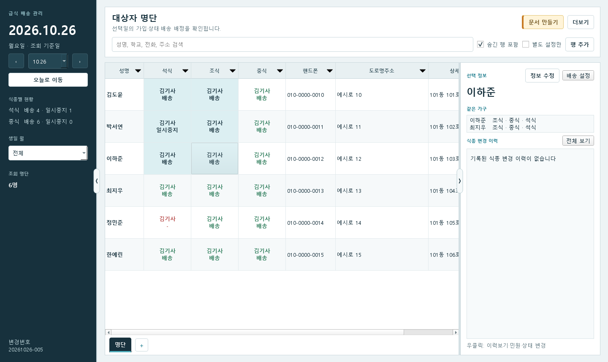
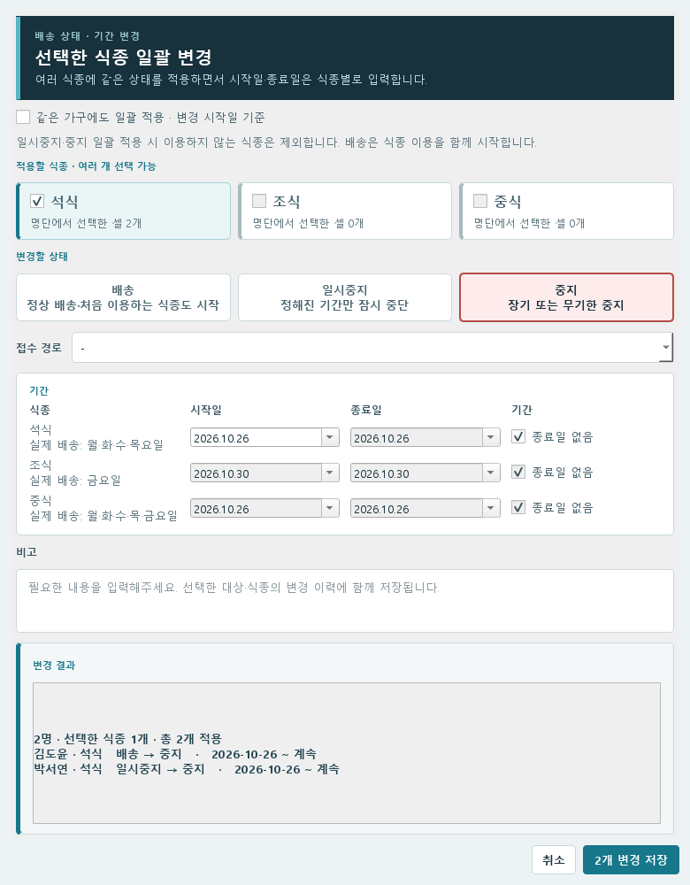
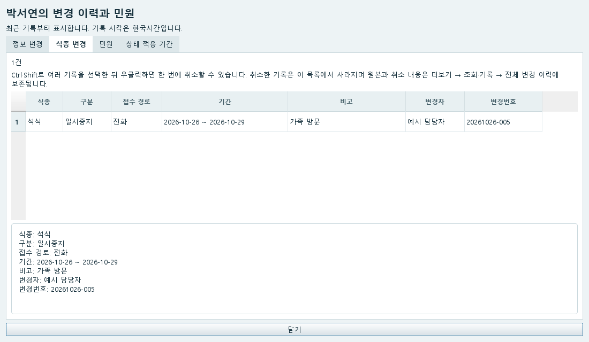

01 / 사용 방법
식종 배송·일시중지·중지
식종은 석식·조식·중식을 뜻합니다. 상태 변경은 명단의 해당 식종 칸에서 시작합니다.
상태를 바꿀 사람과 식종 찾기
- 명단 위 검색칸에 이름을 입력합니다. 같은 이름이 있으면 학교·연락처를 함께 확인합니다.
- 왼쪽 조회 날짜를 확인합니다. 미래 날짜의 변경을 저장해도, 과거 날짜를 보고 있으면 이전 상태가 보입니다.
- 해당 사람의 석식·조식·중식 중 바꿀 칸에서 우클릭합니다. 이름 칸이 아니라 식종 칸을 누릅니다.
- 메뉴에서 배송·일시중지·중지 중 필요한 항목을 선택합니다.


| 할 일 | 선택할 상태 |
|---|---|
| 처음 배송을 시작하거나 중지 후 다시 받기 | 배송 |
| 시작일과 끝나는 날이 정해진 중단 | 일시중지 |
| 장기 중단 또는 다시 받을 날짜가 정해지지 않음 | 중지 |
배송 시작·재개
미가입 중식을 중간에 추가할 때도 이 방법을 사용합니다. 입력한 시작일을 중식 시작일에 저장하고, 종료일을 지정하지 않으면 학교 일정에서 중식 종료일을 채웁니다. 이미 가입된 기간 안에서 배송을 재개할 때는 기존 중식 날짜를 유지합니다. 저장 후 중식 날짜 칼럼에서 수정할 수 있습니다.
배송으로 저장하면 해당 식종·기사의 배송순서 맨 아래에 배치됩니다. 같은 배송 행으로 묶인 가구원은 함께 이동하고 같은 번호를 사용합니다. 순서는 날짜 제한 없는 공통 값이므로 미래 배송을 예약해도 저장 즉시 갱신됩니다.


- 식종 칸을 우클릭해 배송을 선택합니다.
- 창 위의 이름과 체크된 식종을 확인합니다. 처음 이용하는 식종도 배송으로 시작할 수 있습니다.
- 시작일에 실제로 다시 받을 날짜를 입력합니다. 계속 받을 예정이면 종료일 없음을 체크한 상태로 둡니다.
- 필요하면 접수 경로와 비고를 입력합니다. 선택하지 않은 접수 경로는 -로 남습니다.
- 아래 변경 결과에서 이름·식종·기간을 확인하고 N개 변경 저장을 누릅니다.
- 명단의 조회 날짜를 시작일로 맞춰 배송 상태를 확인합니다.
정해진 기간 일시중지


- 식종 칸을 우클릭해 일시중지를 선택합니다.
- 중단할 식종을 체크합니다. 한 식종만 바꾸려면 다른 식종은 체크하지 않습니다.
- 시작일에는 처음 받지 않는 날, 종료일에는 마지막으로 받지 않는 날을 입력합니다.
- 전화·메일 등 접수 경로와 필요한 비고를 입력합니다.
- 변경 결과의 기간과 대상자를 확인하고 N개 변경 저장을 누릅니다.
여러 식종을 선택했으면 각 식종의 날짜를 따로 확인하세요. 석식과 조식의 배송요일이 다를 수 있습니다. 일시중지는 종료일을 비워 둘 수 없습니다.
종료일 없이 중지
중지로 저장하면 해당 사람·식종의 배송순서를 비우고, 남은 가구 순서를 1번부터 다시 매깁니다. 같은 가구에 배송 중인 사람이 남으면 그 가구는 목록에 유지됩니다. 다른 기사·식종의 순서는 유지하며, 일시중지는 순서를 바꾸지 않습니다.


- 식종 칸을 우클릭해 중지를 선택합니다.
- 중지할 식종과 시작일을 정합니다.
- 다시 받을 날짜가 정해지지 않았다면 종료일 없음을 그대로 둡니다.
- 접수 경로·비고를 입력하고, 변경 결과를 확인한 뒤 저장합니다.
다시 받기로 하면 같은 식종에서 배송을 선택해 재개일을 입력합니다. 중지 처리 때문에 명단의 사람 자체를 삭제할 필요는 없습니다.
기본 설정에서는 같은 달 안에 종료일 없는 중지와 배송 재개가 이어지면, 그 사이를 일시중지로 계산합니다. 다음 달에 재개하면 중지로 유지합니다. 이 동작은 더보기 → 운영·설정 → 설정 → 일시중지 자동변환에서 바꿀 수 있습니다.
여러 사람·식종을 함께 변경
떨어진 칸 선택: 첫 식종 칸을 클릭한 뒤, 키보드의 Ctrl을 누른 채 추가할 칸을 클릭합니다. 선택을 마치면 Ctrl에서 손을 뗍니다.


이어진 범위 선택: 시작할 칸을 클릭한 뒤, Shift를 누른 채 마지막 칸을 클릭합니다. 두 칸 사이의 직사각형 범위가 모두 선택됩니다.


- 같이 바꿀 식종 칸을 선택합니다. 떨어진 칸은 Ctrl을 누른 채 클릭하고, 이어진 범위는 첫 칸을 누른 뒤 Shift를 누른 채 마지막 칸을 누릅니다.
- 선택한 칸 안에서 우클릭하고 선택한 식종 N개 · 일시중지 등 필요한 메뉴를 누릅니다.
- 변경할 상태와 식종별 기간을 입력합니다.
- 변경 결과에 나온 이름·식종·건수를 확인한 뒤 저장합니다.


한 사람의 여러 식종은 상태 변경창에서 식종을 더 체크해도 됩니다. 같은 가구에도 적용할 때는 창 위의 같은 가구에도 일괄 적용을 체크하고 추가된 대상을 확인하세요.
저장한 내용 확인·잘못 입력한 기록 취소
여는 위치 · 대상자 칸 우클릭 → 이력보기 / 오른쪽 식종 변경 이력 → 전체 보기


- 대상자의 이력보기를 열고 식종 변경 탭을 선택합니다.
- 잘못 등록한 기록을 선택합니다. 여러 건이면 Ctrl·Shift로 함께 선택합니다.
- 선택한 기록 위에서 우클릭해 선택한 변경 N건 취소를 누릅니다.
- 확인창의 이름·식종·기간을 다시 확인한 뒤 취소를 진행합니다. 필요한 상태를 올바른 기간으로 다시 입력합니다.
오른쪽 식종 변경 이력에서도 기록을 선택해 우클릭으로 취소할 수 있습니다. 취소된 기록과 취소 내역은 전체 변경 이력에 남습니다.